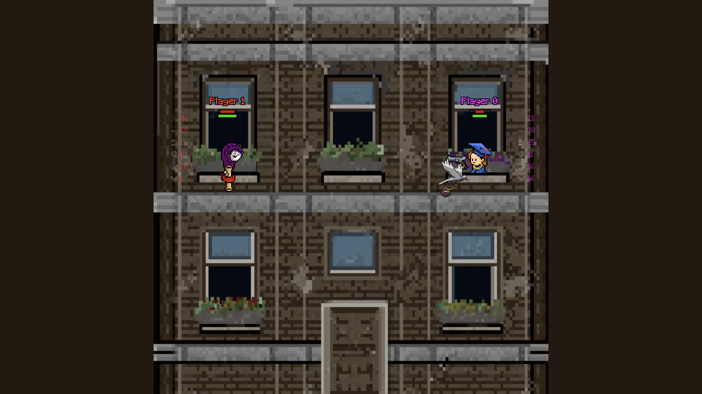

Pigeons & Students
An experimental 2D multiplayer shooter for shared physical spaces, where players use their smartphones as wireless controllers to battle on a large-scale projection.
The project turns architecture into a playable “battle royale” arena and explores how projection mapping and browser-based local multiplayer can create a frictionless social play experience.
Project Snapshot
Role
Lead Systems & Gameplay Designer, Full-Stack Developer
Tools
Vanilla JavaScript, p5.js, PHP, HTML/CSS, Aseprite
Team
Solo undergraduate thesis project
Duration
~6 months, completed May 2023
Platform
Web-based, cross-platform browser experience
Project Type
Undergraduate thesis, Ionian University
Design Challenge
The main goal was to create a local multiplayer game with almost zero setup friction. Instead of requiring dedicated controllers, installations, or complex pairing, I designed the system so players could join instantly by scanning a QR code and using their phones as controllers.
Key Contributions
Real-time controller system
Built an asynchronous communication pipeline with PHP and AJAX to connect multiple mobile devices to the projected game screen.
Gameplay and systems design
Designed the combat loop, playable classes, and the bird-based power-up and penalty delivery system.
Projection calibration tool
Created an admin dashboard that aligned spawn points and game elements with real architectural features such as windows.
Process & Decisions
Why web instead of Unity
I chose a web-based stack to maximize accessibility and cross-device compatibility. This let players join instantly through the browser without plugins, downloads, or platform-specific setup.
Designing for buildings
To make characters feel physically embedded in the projection surface, I implemented a slider-based calibration system that matched digital spawn points to real windows and facade features.
Performance optimization
Testing on lower-power hardware revealed that continuous AJAX polling was too expensive. I refactored the refresh loop from frame-rate-tied updates to a throttled 100ms interval, reducing CPU load while keeping gameplay responsive.
Platform constraint
During development, I had to troubleshoot iOS browser restrictions around gyroscope access, which required specific HTTPS permissions before motion controls would function reliably.
Outcome
The project was showcased at the 16th Audiovisual Arts Festival in 2023 and tested in a public Game Hub setting. The strongest result was how naturally people understood the QR-code-to-controller flow and how intuitive the gyroscope aiming felt, especially for non-gamers.
Public user testing supported the overall playability and usability of the experience, but for portfolio purposes the most important takeaway is that the concept worked successfully in a real exhibition environment.
Reflection
This project taught me how to design a game across both digital and physical space, balancing systems design, technical implementation, and public installation constraints. If I continue it, I would automate QR generation from the server IP and add active disconnect handling so player slots free up immediately when a browser closes.